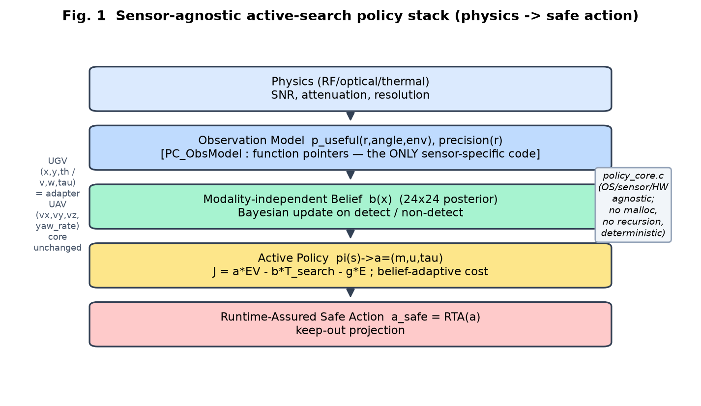
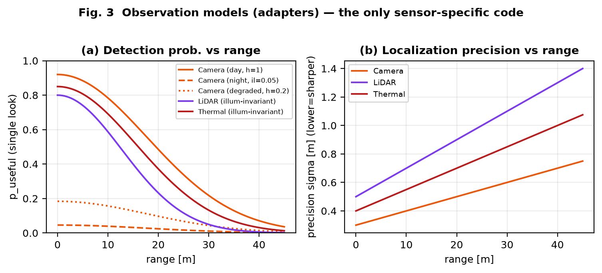
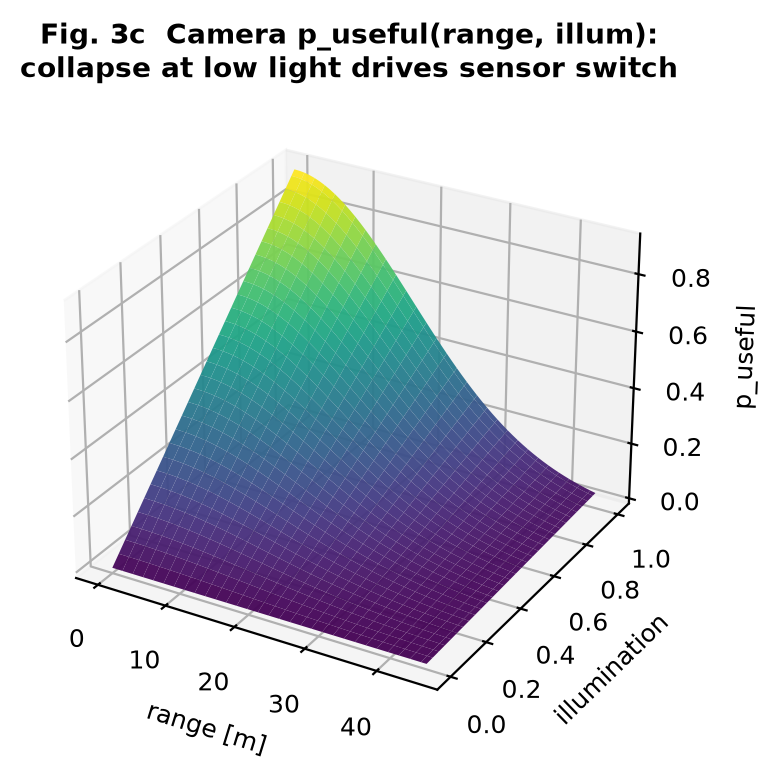
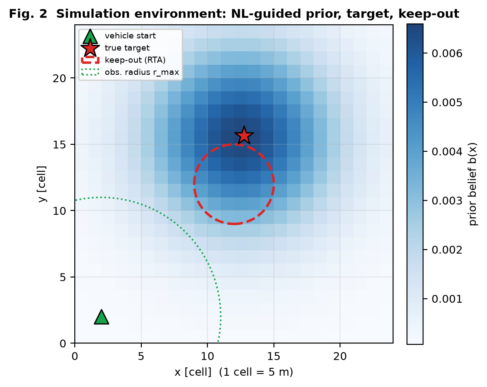
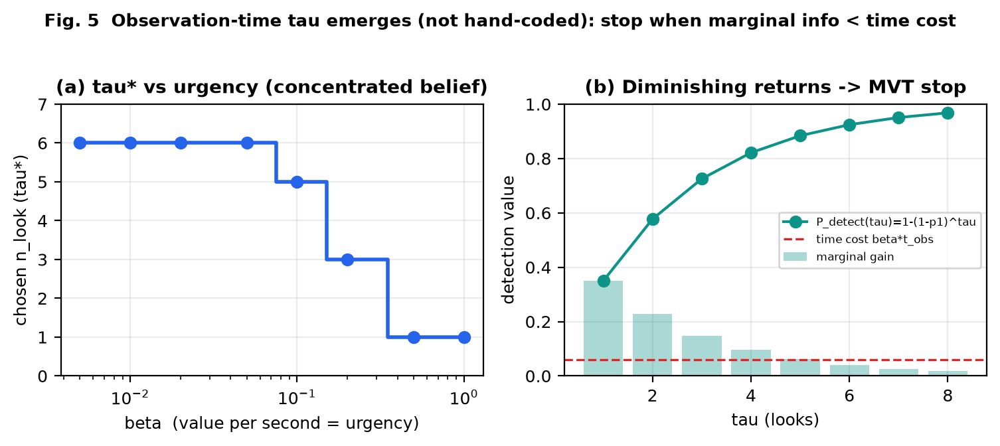
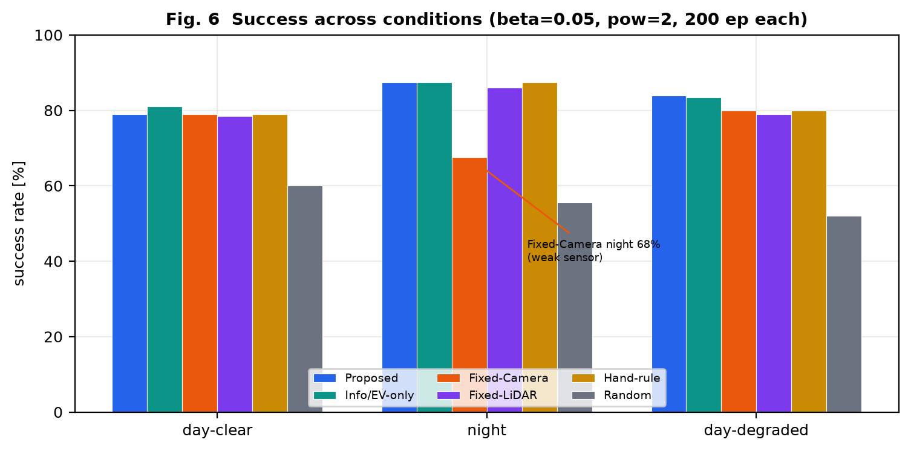
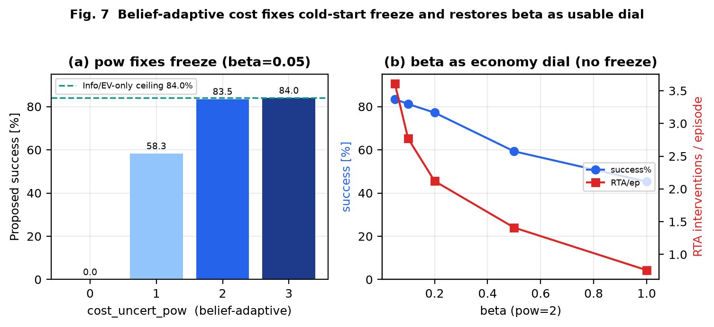
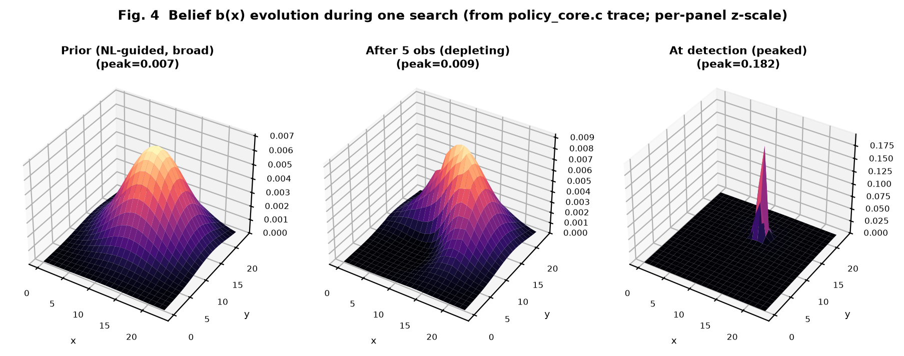
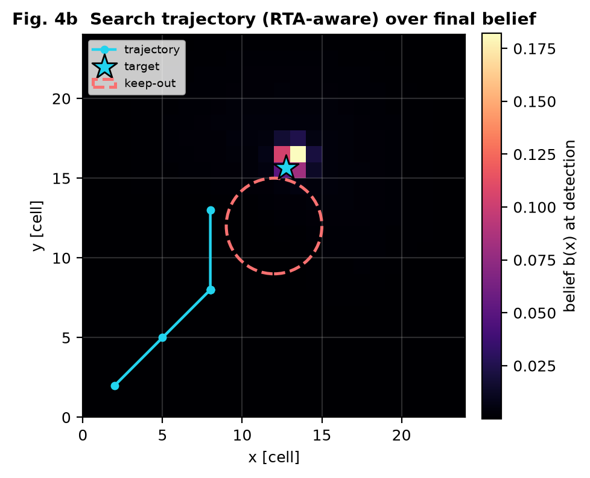

Most robotic active-search systems are built on a heavy Linux/ROS/Jetson stack and demonstrate that a particular sensor finds a target well. We invert both choices. First, we target OS-independent, bare-metal execution: the policy core must link on a microcontroller with no dynamic memory, no recursion, and deterministic timing. Second, we make the policy sensor-agnostic: the core never names a sensor; it sees only an abstract observation model. The research claim is therefore not "sensor X is good" but "the decision layer is portable, sensor-neutral, and its sensor/time choices emerge from physics."
This paper provides the full Methods and Results, the simulation environment, conditions, mathematics, physics models, and code. Prior-art positioning (GoalSwarm, AGOS, SEArch, and how our policy-centric, OS-independent framing differs) is maintained separately in the repository survey and is out of scope here. Contributions:
Fig. 1 shows the five-layer stack. Physics defines detectability and precision; an observation model layer exposes these to the core through two function pointers only; the core maintains belief, runs the policy, and hands its action to a runtime-assurance (RTA) filter. The core file policy_core.c contains no sensor, hardware, or OS dependency, so swapping a sensor means swapping an adapter, and moving UGV→UAV changes only the adapter that translates (v,ω) into (vx,vy,vz,ψ̇); the policy is unchanged.

The world is a 24×24 grid (1 cell = 5 m). Belief b(x) is a normalized posterior over the target cell, independent of sensing modality. Given an observation from cell c with model m in environment e, the update is Bayesian with a modality-supplied likelihood:
where z is the measured location and σ the model's precision. A detection sharpens belief toward z; a miss attenuates the observed footprint, which pushes probability mass toward unobserved cells — the implicit exploration signal. Belief entropy H(b) = −Σ b log b quantifies uncertainty (used below).
Each sensor is an adapter exposing puseful(r,θ,e) (single-look useful-detection probability) and precision(r) (localization sharpness, m). Table II lists the models used; Fig. 3 plots them. Camera detectability scales with illumination and a health factor (lens fouling / backlight); LiDAR and thermal are illumination-invariant (active / emissive). Fig. 3c shows the camera surface collapsing at low light — the physical fact that later drives the emergent sensor switch. These curves are stylized and must be replaced by field calibration before hardware trials (Sec. V).


| Sensor | puseful(r) | precision σ(r) [m] | illum? |
|---|---|---|---|
| Camera | 0.92·e−(r/25)²·illum·health | 0.30+0.010r | yes |
| LiDAR | 0.80·e−(r/18)² | 0.50+0.020r | no |
| Thermal | 0.85·e−(r/22)² | 0.40+0.015r | no |
The action is a = (m, u, τ): sensor index m, motion u=(v,ω) toward a target cell, and observation count τ. The policy enumerates candidate moves × sensors × τ and maximizes
EV is the belief-weighted expected detection value, sharper sensors (smaller σ) preferred. Because EV depends on the sensor only through physics, the argmax over sensors is the emergent sensor choice.
Search time is modeled as real elapsed time, not a step count:
so β is a value per second (mission urgency). Since EV(τ)∝1−(1−p1)τ is concave and time cost is linear, the optimum stops when marginal information falls below β·tobs — Charnov's marginal-value theorem. Thus τ emerges from urgency and scene (Fig. 5), not a hand-set constant.
A purely myopic (one-step) maximization of (4) has a failure mode: under a diffuse prior EV is nearly flat, so any motion costs more than its immediate EV gain and the vehicle freezes, never reaching distant belief mass (Sec. IV-C). We scale the cost by belief uncertainty:
with γeff analogous. When belief is diffuse (Hnorm→1) cost↓ and the policy explores freely; when concentrated cost↑ and it confirms economically. The exponent p is an integer power (no powf; MCU-friendly); p=0 disables the adaptation.
Every action passes an RTA filter: if the target cell violates a keep-out set, it is projected to the nearest safe candidate and the step is flagged. Sensor and τ are preserved. This is a Simplex-style safety layer and is measured as an intervention rate.
Before reporting we audited whether each objective term is measurable in a real outdoor trial (Table IV). Three terms are field-observable; the information term is a model-internal quantity. We therefore split the objective: the online drive objective may include information gain, but the reported score uses only field-measurable P, T, C. Conflating the two would let a policy be graded on its own belief.
| Term | Field measurement | Score? |
|---|---|---|
| Pdetect | ground-truth target, count detections | yes |
| Tsearch | wall clock to detection | yes |
| Cmotion | odometry distance / motor energy | yes |
| I(b;b′) | belief entropy — model-internal | drive only |
The evaluation simulator (Fig. 2) draws a language-guided prior blob (σ=5 cells) and samples the true target from it (σ=3 cells), placed beyond the initial observation radius so search is required; a fixed keep-out zone makes RTA a live metric. Every policy observes through the same adapters (model = truth is the fair common ground); the proposed policy's only advantage is its decision. Table I lists parameters; Table III lists the six policies. Per condition we run 200 episodes with paired seeds (identical target/start across policies).

| grid / cell | 24×24 / 5 m | rmax | 9 cells (45 m) |
| vnom | 1 m/s | tobs | 0.5 s |
| τmax | 6 | α,β,γ | 1, 0.05, 0.01 |
| cost pow p | 2 | keep-out | (12,12) r=3 |
| steps/ep | 25 | episodes | 200 × 3 cond |
| prior σ | 5 cells | target σ | 3 cells |
Conditions: day-clear (illum 1.0, health 1.0), night (illum 0.05), day-degraded (health 0.2 — camera alive but degraded, breaking any "day→camera" rule). Policies: Proposed (full J, emergent sensor+τ); Info/EV-only (β=γ=0); Fixed-Camera, Fixed-LiDAR (single-sensor, full policy); Hand-rule (illum>0.5⇒camera else thermal); Random.
Fig. 5(a): as urgency β rises from 0.005 to 1.0, chosen τ* falls monotonically 6→6→6→6→5→3→1→1 — low urgency looks to saturation, high urgency glances once, with a genuine interior region. Fig. 5(b) shows the concave detection value and the marginal gain crossing the time-cost line (MVT). Scene also matters: a near target (fast saturation) uses τ*=4 vs 6 for a far target. No rule is coded; the trade-off is physical.

Table III and Fig. 6 give the canonical run (β=0.05, p=2). The structural findings: (i) the emergent policies (Proposed, Info/EV-only) select the right sensor per condition without a rule and keep the highest worst-case floor; (ii) Fixed-Camera is the clear laggard, dragged down at night; (iii) Hand-rule matches the emergent policies where its rule is correct but loses at day-degraded, where its "day→camera" assumption is false and the emergent policy switches to thermal.
| Policy | day | night | degr. | floor | overall | RTA |
|---|---|---|---|---|---|---|
| Proposed | 79.0 | 87.5 | 84.0 | 79.0 | 83.5 | 3.61 |
| Info/EV-only | 81.0 | 87.5 | 83.5 | 81.0 | 84.0 | 4.07 |
| Fixed-Camera | 79.0 | 67.5 | 80.0 | 67.5 | 75.5 | 3.44 |
| Fixed-LiDAR | 78.5 | 86.0 | 79.0 | 78.5 | 81.2 | 2.45 |
| Hand-rule | 79.0 | 87.5 | 80.0 | 79.0 | 82.2 | 3.65 |
| Random | 60.0 | 55.5 | 52.0 | 52.0 | 55.8 | 0.42 |

Fig. 7(a): at β=0.05 the myopic additive policy (p=0) scores 0.0% — it freezes under the diffuse prior. Raising the belief-adaptive power recovers it: p=1 →58.3%, p=2→83.5% (essentially the cost-free ceiling of 84.0%), p=3→84.0%. Fig. 7(b): with the fix, β becomes a smooth economy dial — 0.05→83.5% (RTA 3.61), 0.2→77.2% (RTA 2.12), 0.5→59.3%, 1.0→45.3% — instead of the all-or-nothing 0% cliff. The fix separates "do not freeze" from "be economical," a knob the cost-free Info policy lacks.

Fig. 4 shows one search traced directly from the C core: a broad NL-guided prior, a depleting belief after five non-detections (note the observed-region notch), and a sharp peak at detection. Fig. 4b overlays the RTA-aware trajectory, which routes around the keep-out zone before localizing.


Repository policy_core/: policy_core.{h,c} (core), host_test.c (regression: emergence, τ-sweep, freeze-fix, RTA, belief), sim.c (this evaluation), RESULTS.md (measured numbers with invalidation conditions). Commands: make test; make baselines; ./sim <beta> <gamma> [pow]; ./sim --trace. All figures/tables in this paper were regenerated from these binaries.
typedef struct { /* the ONLY sensor-specific object */
float (*p_useful)(const void*cfg,float r,float ang,const PC_Env*e);
float (*precision)(const void*cfg,float r);
const void *cfg; uint8_t id;
} PC_ObsModel;
typedef struct { uint8_t sensor; float v,w; uint8_t n_look;
float tgt_x,tgt_y; uint8_t rta_tripped; } PC_Action; /* a=(m,u,tau) */
PC_Action pc_policy_step(const PC_Belief*, const PC_Vehicle*,
const PC_ObsModel* models, uint8_t n, const PC_Env*, const PC_Cfg*);
PC_Action pc_rta_filter(PC_Action, const PC_Vehicle*, const PC_Safety*, ...);
/* belief-adaptive cost: beta_eff = beta*(1-H_norm)^p */
float Hn = pc_belief_entropy(b)/logf((float)PC_GRID_N);
float scale=1.0f; for(j=0;j<cfg->cost_uncert_pow;++j) scale*=(1.0f-Hn);
float beta_eff=cfg->beta*scale, gamma_eff=cfg->gamma*scale;
for(move) { t_move = move_m/v_nom;
for(sensor) for(nl=1..n_look_max) {
ev = sum_x b(x)*(1-(1-p_useful)^nl)/precision; /* Eq.5 */
t = t_move + nl*t_obs; /* Eq.6 */
J = alpha*ev - beta_eff*t - gamma_eff*move_m; /* Eq.4,7 */
if(J>bestJ) best=(sensor,move,nl); } } /* argmax */
float cam_p(const void*c,float r,float a,const PC_Env*e){
return 0.92f*expf(-(r/25.f)*(r/25.f))*e->illum*e->extra0; } /* health */
float lid_p(const void*c,float r,float a,const PC_Env*e){
return 0.80f*expf(-(r/18.f)*(r/18.f)); } /* illumination-invariant */
float thr_p(const void*c,float r,float a,const PC_Env*e){
return 0.85f*expf(-(r/22.f)*(r/22.f)); } /* illumination-invariant */
Confirmation level 조각 (textbook-level attribution, sources not re-read in this work) is recorded per citation in paper/출처.jsonl. Detailed active-search prior art (GoalSwarm, AGOS, SEArch) and our differentiation are maintained in the repository survey paper/선행조사/센서불가지_능동탐색.md; no unread specific claim is asserted here.